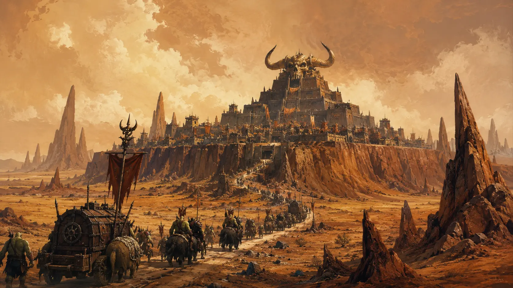

Heimatwelt der Orks · Äußerer Arm
Kharn
Eine harte Welt für ein Volk, das Härte nicht mit Gehorsam verwechselt.
01 · Die Welt
Zwischen Steppe und Sand
Kharn wurde den Orks überlassen, weil das Imperium die Welt für entbehrlich hielt. Die Orks machten sie zu ihrer Heimat.
Steppen und Sandwüsten bedecken weite Teile des Planeten. Felsnadeln ragen aus der Ebene, Gebirge bergen Erz, und nur wenige Regionen tragen genug Wasser und fruchtbaren Boden für große Siedlungen. Genau dort entstanden die vier Klanstädte.
„Kharn war leer, sagen sie. Die Ruinen sagen etwas anderes.“
Händler aus dem Forum
02 · Schädelthron
Neutraler Boden aus schwarzem Stein
Die Hauptstadt liegt auf einem kargen Plateau und gehört keinem einzelnen Klan. Im Zentrum erhebt sich der stufenförmige Tempel des Weltenfressers. Sein gehörntes Schädelsymbol ist schon aus großer Entfernung über der Steppe sichtbar.
Jeder Klan unterhält einen eigenen Sitz und Tempel in der Stadt. Hier leben die Fresserzungen, hier berät der Megaboss mit seinem Rat, und am Fuß des Plateaus wird das jährliche Turnier ausgetragen, bei dem seine Herrschaft offen herausgefordert werden darf.
03 · Unter dem Sand
Eine verdrängte Vergangenheit
Kharn war bewohnt, bevor die Orks kamen. Über den Planeten verteilt liegen Ruinen einer ausgelöschten oder vertriebenen Zivilisation. Manche Relikte erinnern an die Technologie der uralten Sprungtore, doch die meisten Orks behandeln sie als nutzloses Gerümpel oder meiden sie aus Vorsicht.
Die offizielle Geschichte spricht kaum darüber. Für Kharn bleibt diese Stille bedeutsam: Auch ein Volk, das selbst als Werkzeug geschaffen wurde, kann auf den Trümmern anderer leben.